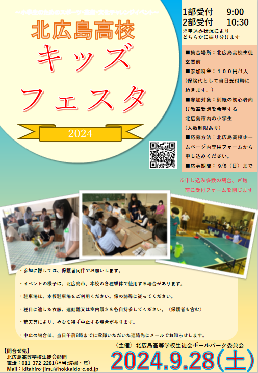

開催日:9月中旬
開催場所：ーー
担当:BP委員長
準備期間:2~3ヶ月前
エスコンフィールド北海道（以下エスコン）主催のイベント。
北広島市内の小学生を対象に部活動の体験を行い、地域交流を深めることが目的。
小学生の保護者に対し、参加希望を取り本校部活動に参加してもらう。
部活動側にも参加希望を取る。
執行部として動きがあるのは前日準備と当日の受付など。
BP委員長は部局との打ち合わせや資料の作成などを行う。
実施日は休日になるため執行部は休日に登校。
01.キッズフェスタの実施と内容を確認する。（例年通りなのか変更か）
02.前年の資料を参考に要項の作成。
03.要項と並行しポスターの作成も行う。
04.高校用要項が完成したら、部局同好会長会議を開く。
05.会議で内容の説明を行い、参加希望を取る。
06.後日、参加希望の部局同好会長のみで会議を開く。
07.当日に行う体験内容の細かい企画書を提出してもらう。（夏休み明けには回収したい）
08.部活が用紙を作成している間に委員長は企画の調整や会場図の作成を行う。
09.小学校への希望調査も作成する。
10.ポスターに参加希望FormのQrコードを掲載し、市内小学校に送付する。
市役所にもポスターを張るので合計3000枚ほど。
11.全資料の作成終了後、1週間ほど前に部局同好会長会議で最終説明を行う。
事前準備はこれで終了。
01.夏休み中に小学生配布用の缶バッジを作成する。
02.参加部活動が確定後、当日使用のプラカードを用意。（壮行会用を流用）
03.前日に「受付」「駐車場」の設営作業
04.当日は「受付業務」「駐車場誘導」「小学生誘導」「記録用写真撮影」を行う。
01.駐車場で参加者の車を誘導する。
02.受付で名簿確認を行い、缶バッジを配布
03.部活動生徒の誘導で各場所へ移動。
04.体験1部開始
05.執行部は各体験場所を回り、進行状況の確認と写真撮影を行う。
06.体験1部終了後、各部活動で解散。
07.体験2部も同様の流れで行う。
08.体験2部終了後、執行部は受け付けの片づけを行う。
※来場者の外靴袋を用意。
※景品のお菓子は原則禁止。（体験中は許可 茶道部の茶菓子等）
| 部活名 | 場所 | 人数 | 内容 |
| サッカー | グラウンド | 名 | パス/ドリブル/ゲームなど |
| 野球 | グラウンド | 名 | キャッチボール/トスバッティングなど |
| 男女硬式テニス | テニスコート（手前） | 名 | ラリー/サーブ/ゲームなど |
| ソフトテニス | テニスコート(奥) | 名 | ラリー/サーブ/ゲームなど |
| 陸上競技 | グラウンド | 名 | かけっこ/鬼ごっこなど |
| 男女バドミントン | 第1体育館 | 名 | ラリー/的あてなど |
| 男女バレーボール | 第1体育館 | 名 | 対人/的あて/ゲームなど |
| 男女バスケットボール | 第2体育館 | 名 | パスやドリブル/ゲームなど |
| 卓球 | 第2体育館 | 名 | ラリー/的あてなど |
| 剣道 | 格技場 | 名 | ？？？ |
| チアダンス | 1階ホール | 名 | パフォーマンス観戦など |
| アウトドア | ？？？ | 名 | ？？？ |
| ESS | ？？？ | 名 | 英語でゲームなど |
| 生物 | ？？？ | 名 | ？？？ |
| 書道 | ？？？ | 名 | ？？？ |
| 囲碁・将棋 | ？？？ | 名 | ？？？ |
| 写真 | ？？？ | 名 | ？？？ |
| 美術 | ？？？ | 名 | ？？？ |
| 華道 | ？？？ | 名 | ？？？ |
| 茶道 | ？？？ | 名 | ？？？ |
| 放送 | ？？？ | 名 | ？？？ |
| 図書 | ？？？ | 名 | ？？？ |
| 吹奏楽 | ？？？ | 名 | ？？？ |
| 軽音楽 | ？？？ | 名 | ？？？ |
| パソコン | ？？？ | 名 | ？？？ |
| 小学校名 | 参加人数 |
| 小学校 | 名 |
| 小学校 | 名 |
| 小学校 | 名 |
| 小学校 | 名 |
| 小学校 | 名 |
| 小学校 | 名 |
| 小学校 | 名 |
24年度ポスター
